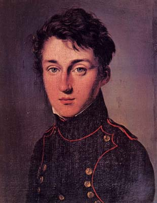

About
Early Life
Robert Boyle was born in Stalbridge, Ireland in 1627. He was born into one of the wealthiest families in Britain due to his father being the Lord Treasurer of the Country. Boyle grew up under this roof as a son of an aristocrat and these views stuck with him his whole life. Not much occurred during Boyle’s youth due to his wealthy upbringing. During the end of Roberts youth, he was accepted into Eton college where he studied, although this was split part time with studying from home. In order to finish off his education he went to explore the rest of Europe and spent a few months in Italy, France, and Switzerland. Traveling around Europe affected Boyle’s view of the world and formed his desire to explain science and how it relates to the religion which shaped his life. Due to Boyle’s deep theism his studies turned away from writing to focus upon natural philosophy.
Later Life

Nullam euismod iaculis nibh, non dignissim odio placerat non. Sed feugiat nisi sit amet lacus efficitur imperdiet. Proin vehicula suscipit libero vitae dignissim. Nullam pretium, mauris nec accumsan molestie, erat metus malesuada dui, at dictum dolor nisi vel lorem. Morbi lectus lorem, scelerisque sit amet eros vitae, ornare rhoncus nunc. Vestibulum eu mi sit amet tellus varius bibendum sed sit amet neque. Pellentesque cursus quis velit ut pretium. Donec eget quam a turpis varius ullamcorper. Phasellus in purus faucibus, tincidunt dui et, tempus orci. Sed augue libero, malesuada a velit vel, placerat gravida sem. Nulla facilisi.